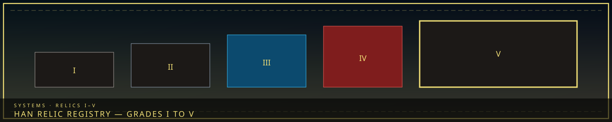
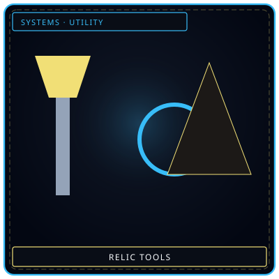

/// RAPID JUMP:
STATUS: ARCHIVE VERIFIED |
CLEARANCE: LEVEL-4 OVERSIGHT |
PROTOCOL: REVERIE DIRECTORATE
ARTICLE
DISCUSSION
SOURCE
HISTORY
YEAR 4,238 · DAWN OF HOPE
SYSTEMS & MECHANICS RECORD
Han Relic Registry (Grades I–V)
Contents
“The Before-Time is not gone. It is buried — in the walls, in the ground, in the objects.”


ToolsNot treasures Han in thingsWounds you can hold
Han in thingsWounds you can holdArtifacts of the Before-Time
"The Before-Time is not gone. It is buried — in the walls, in the ground, in the objects that survived. The relics remember what the city forgot."
Overview
Han Relics are objects from the Before-Time — the era before the Consolihan, before the Cheongula, before the city was built on sorrow. These artifacts are not just old — they are saturated with Han from a time when sorrow was raw, unstructured, and infinite.
Each relic holds a fragment of the Before-Time — a memory, a truth, a secret that the city has buried. Finding them is dangerous. Using them is more dangerous. Destroying them is impossible.
The relics are the closest thing Somnarak has to quest objects — items that drive narrative, reveal truth, and change the course of the story.
I. What Han Relics Are
The Nature of Relics
Han Relics are not manufactured. They are crystallized — formed when the Before-Time's raw Han saturated an object, transforming it into something that is more than its material. A sword becomes a memory of war. A mirror becomes a window to the past. A key becomes a question that has no answer.
Properties:
- Han-saturated — each relic contains concentrated Han from the Before-Time
- Indestructible — relics cannot be destroyed, only contained or hidden
- Resonant — relics respond to sorrow, activating when near strong emotions
- Dangerous — relics can Fracture those who use them without understanding
- Valuable — relics are the most sought-after objects in Somnarak
The Origin
The relics were created during the Consolihan — the great gathering of sorrow that stabilized the city. During the Consolihan, the settlers' collective grief crystallized into objects — tools, weapons, personal items, sacred objects. These crystallized items became the first Han Relics.
The relics were scattered across the city as it grew — buried in walls, hidden in vaults, lost in the wilderness. Some were preserved by the Keepers. Some were stolen by the Frays. Some were forgotten entirely.
The Classification
The Keepers classify Han Relics into four categories:
| Category | Name | Description | Danger Level |
|---|---|---|---|
| Class I | Echo Relics | Minor relics — contain fragments of memory or emotion | Low |
| Class II | Sorrow Relics | Moderate relics — contain concentrated sorrow from specific events | Medium |
| Class III | Legacy Relics | Major relics — contain the memories of important figures or events | High |
| Class IV | Genesis Relics | Origin relics — contain the memories of the Consolihan itself | Critical |
II. The Seven Great Relics
The most powerful Han Relics are known as the Seven Great Relics — artifacts from the Before-Time that hold the city's deepest secrets. Each relic is connected to a specific event, a specific person, or a specific truth that the city has buried.
Relic 1: The First Tear (첫 번째 눈물 — Cheot Beonjjae Nunmul)
Classification: Class IV — Genesis Relic
What it is: A single tear — crystallized, ancient, glowing with faint blue light. The First Tear is the first sorrow ever felt on Mugenhan — the first moment of grief, preserved forever.
Origin: The First Tear was shed by the first settler to die on Mugenhan — a woman whose name has been erased from the Archive. She died of Han exposure — the first casualty of the planet's sorrow. Her final tear crystallized before it hit the ground.
Properties:
- The tear is warm to the touch — but the warmth is not physical. It is emotional.
- Anyone who touches the tear feels every sorrow ever felt on Mugenhan — a moment of absolute grief.
- The tear cannot be destroyed. It cannot be contained. It can only be hidden.
Location: Sealed in the Alpha Tree's deepest vault — behind the Final Door.
Narrative function: The First Tear is the key to understanding the city's emotional foundation. Whoever holds the tear understands the full weight of Somnarak's sorrow — and can choose to carry it or release it.
Relic 2: The Founder's Seal (창시자의 인장 — Changsija-ui Injang)
Classification: Class III — Legacy Relic
What it is: A seal — massive, made of dark Han-crystal, bearing the mark of the city's founder. The seal was used to authorize the Consolihan — the gathering of sorrow that stabilized the city.
Origin: The Founder's Seal was created by the first Council — the group of settlers who decided to harness the planet's Han. The seal was used to mark official documents, to authorize decisions, to bind the city together.
Properties:
- The seal resonates with authority — anyone who holds it commands respect, even from enemies.
- The seal contains the Founder's final words — a message that has never been decoded.
- The seal can authorize actions that would otherwise be forbidden — including Taboo exceptions.
Location: Held by the Council of Sighs — passed from generation to generation.
Narrative function: The Founder's Seal is the key to the Council's legitimacy. Whoever holds the seal holds the authority to make decisions that bind the city. The seal also contains a secret — the Founder's true intentions for the city.
Relic 3: The Mourner's Mask (애도자의 가면 — Aedoja-ui Gamyeon)
Classification: Class III — Legacy Relic
What it is: A mask — beautiful, translucent, made of crystallized tears. The mask was worn by the first Mourner — the citizen who led the Consolihan's mourning rituals.
Origin: The Mourner's Mask was created during the Consolihan — crystallized from the tears of the thousand citizens who gathered to mourn. The mask was worn by the Mourner — a citizen whose identity has been erased from the Archive.
Properties:
- The mask allows the wearer to see the dead — not as ghosts, but as memories. The wearer sees the city's history as if it were happening now.
- The mask suppresses the wearer's own emotions — they feel nothing, only the sorrow of others.
- The mask cannot be removed by the wearer — only by someone else.
Location: Lost — the mask disappeared after the Consolihan. Some say it is in the Maw. Some say it is in the Echo Gardens. Some say it is still being worn.
Narrative function: The Mourner's Mask is the key to understanding the Consolihan. Whoever wears the mask sees the truth about the city's founding — including the Cheongula.
Relic 4: The Debt Ledger (빚의 장부 — Bit-ui Jangbu)
Classification: Class III — Legacy Relic
What it is: A ledger — massive, made of crystallized obligation, containing the records of every debt ever incurred in Somnarak. The ledger is not a book — it is a record of the city's economic foundation.
Origin: The Debt Ledger was created by the first Collectors — the citizens who established the debt system. The ledger was used to track obligations, to enforce payments, to manage the city's sorrow output.
Properties:
- The ledger contains every debt ever incurred — including debts that have been erased, forgotten, or hidden.
- The ledger can create new debts — writing a name in the ledger creates an obligation.
- The ledger can erase debts — crossing out a name removes the obligation.
- The ledger is alive — it grows as new debts are created, shrinking as debts are paid.
Location: Held by the Collectors — stored in a vault beneath Collector's Row.
Narrative function: The Debt Ledger is the key to the city's economic system. Whoever controls the ledger controls the debt — and the debt controls the city. The ledger also contains a secret — the original debt that started the system.
Relic 5: The Dreamer's Thread (꿈꾸는 실 — Kkumkkuneun Sil)
Classification: Class II — Sorrow Relic
What it is: A thread — thin, shimmering, made of crystallized dreams. The thread connects the waking world to the Dream realm — a physical link between reality and the subconscious.
Origin: The Dreamer's Thread was spun by the first Weaver — a citizen who discovered the Dream realm and created a way to access it. The thread was the first connection between Somnarak and the Dream.
Properties:
- The thread allows the holder to enter the Dream realm — physically, not just mentally.
- The thread can weave illusions — creating temporary realities from dreams.
- The thread can unravel — if pulled too hard, it breaks, severing the connection to the Dream.
Location: Held by the Weavers — kept in a hidden chamber beneath the Dream Gates.
Narrative function: The Dreamer's Thread is the key to the Dream realm. Whoever holds the thread can access the Dream — and the Dream contains truths that the waking world has forgotten.
Relic 6: The Architect's Compass (건축가의 나침반 — Geonchukga-ui Nachimban)
Classification: Class II — Sorrow Relic
What it is: A compass — ancient, made of crystallized intent, pointing not north but toward the nearest source of sorrow. The compass was the first tool used to map the city's Han-flow.
Origin: The Architect's Compass was created by the first Architect — the citizen who designed the city's layout. The compass was used to find the safest places to build — and the most dangerous places to avoid.
Properties:
- The compass points toward sorrow — guiding the holder to the nearest source of Han.
- The compass can map Han-flow — showing the invisible currents of sorrow that run through the city.
- The compass can predict Han-storms — warning the holder of incoming surges.
Location: Lost — the compass disappeared during the city's second expansion. Some say it is buried in Zone B. Some say it is in the Desolate.
Narrative function: The Architect's Compass is the key to understanding the city's layout. Whoever holds the compass can see the Han-flow — and the Han-flow reveals the city's hidden structure.
Relic 7: The Exile's Key (추방자의 열쇠 — Chubangja-ui Yeolsoe)
Classification: Class III — Legacy Relic
What it is: A key — massive, made of dark Han-crystal, bearing the mark of the Exile's Gate. The key opens the Gate — the passage between Somnarak and the Desolate.
Origin: The Exile's Key was created by the Council — to seal the Exile's Gate after the Exile was cast out. The key was given to the Gate Watch — the Wardens who guard the border.
Properties:
- The key opens the Exile's Gate — allowing passage between Somnarak and the Desolate.
- The key can seal the Gate — preventing anyone from entering or leaving.
- The key resonates with the Exile — if the Exile touches the key, the Gate opens automatically.
Location: Held by the Gate Watch — kept in a vault beneath Zone E.
Narrative function: The Exile's Key is the key to the Desolate. Whoever holds the key controls access to the wilderness — and the wilderness contains truths that the city has buried.
III. Minor Relics
Class I — Echo Relics
| Relic | Description | Location |
|---|---|---|
| The Whispering Stone | A stone that whispers the names of the dead | Echo Gardens |
| The Tear Pendant | A pendant that makes the wearer weep | Collector's Row |
| The Memory Shard | A shard that shows fragments of forgotten memories | Grand Archive |
| The Sorrow Coin | A coin that weighs exactly as much as the holder's grief | Collector's Row |
| The Dream Fragment | A fragment of the Dream realm that has crystallized | Dream Gates |
| The Han Lantern | A lantern that glows near sources of sorrow | Zone B |
| The Debt Token | A token that represents a single unit of obligation | Collector's Row |
| The Veil Thread | A thread from the Veil that suppresses emotion | Mender's Workshop |
Class II — Sorrow Relics
| Relic | Description | Location |
|---|---|---|
| The Mourner's Bell | A bell that tolls for the dead | Echo Gardens |
| The Debt Chain | A chain that binds the holder to their obligation | Collector's Row |
| The Dream Mirror | A mirror that shows the holder's subconscious | Dream Gates |
| The Han Compass | A compass that points toward sorrow | Architect's Hall |
| The Memory Lock | A lock that seals memories | Grand Archive |
| The Sorrow Seed | A seed that grows into a Sorrow Entity | Echo Gardens |
| The Veil Needle | A needle that repairs the Veil | Mender's Workshop |
| The Exile's Map | A map of the Desolate | Zone E |
IV. How Relics Are Used
For Storytelling
Han Relics are quest objects — items that drive narrative, reveal truth, and change the course of the story. Each relic is connected to a specific mystery, a specific character, or a specific event.
Example quests:
- Find the Architect's Compass to map the Han-flow and predict the next Han-storm
- Retrieve the Mourner's Mask to see the truth about the Consolihan
- Open the Exile's Gate to contact the Exile and learn about the Desolate
- Steal the Debt Ledger to erase the city's debts and free the citizens
- Use the Dreamer's Thread to enter the Dream realm and find forgotten memories
For The SED
The SED encounters relics during exploration — finding them in the Undercity, the Forgotten Districts, the Deep Gardens. Each relic reveals a fragment of the Before-Time.
For The UCD
The UCD encounters relics in the underworld — Frays selling them, Collectors hoarding them, citizens desperate enough to buy them. Each relic has a price.
For The R.D.
The R.D. studies relics — analyzing their Han-content, decoding their memories, understanding their power. Each relic is a research project.
V. The Danger of Relics
Fracture Risk
Han Relics are dangerous. They contain concentrated sorrow from the Before-Time — sorrow that has been building for 6,000 years. Anyone who uses a relic without understanding risks Fracture.
Fracture triggers:
- Touching a Class IV relic without preparation
- Using a relic for selfish purposes
- Attempting to destroy a relic
- Ignoring a relic's warnings
The Collector's Market
Han Relics are the most valuable objects in Somnarak — more valuable than Echoes, more valuable than memories, more valuable than life itself. The black market for relics is thriving — Frays steal them, Collectors hoard them, citizens desperate enough to buy them.
The danger: Relics in the wrong hands can destabilize the city. A relic used for profit can cause more harm than a relic used for understanding.
CANONICAL CROSS-LINKS & ATLAS CONNECTIONS